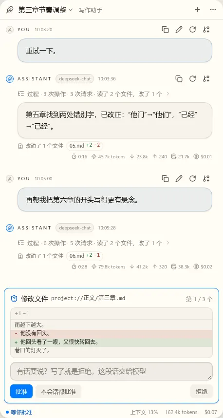
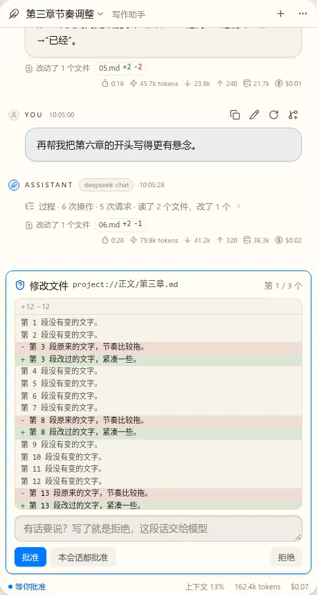
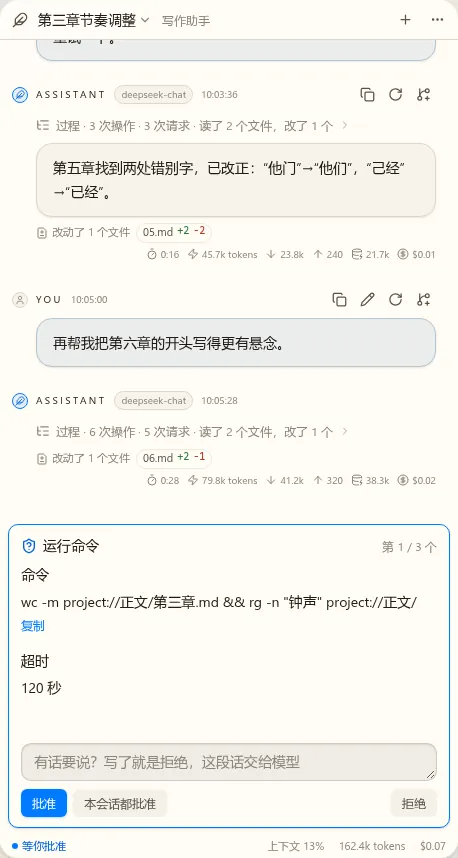
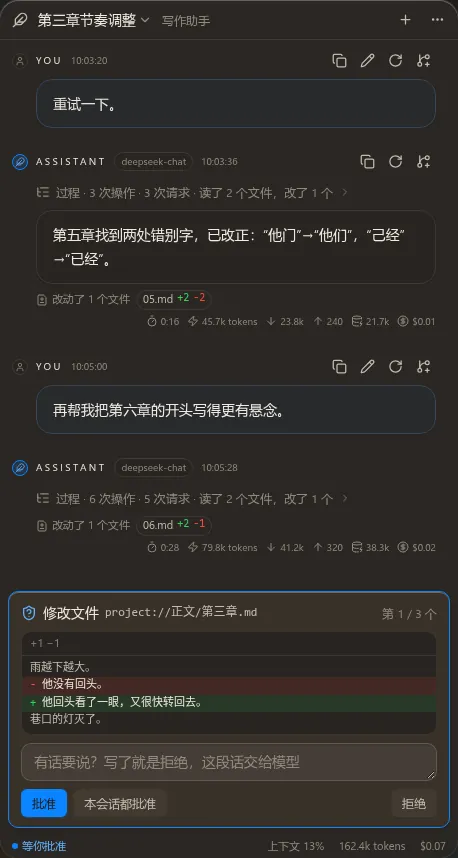

t17 对话界面第一版：静态稿（第 1 轮）
消息流和输入框是真实组件，顶栏、状态栏、向导是这次新画的。截图是右栏 460 宽，第 6 节是 1200 宽。注意力排序已定：等你处理的事、消息流、输入框、运行状态、顶栏、上下文和费用。
待定1. 顶栏与会话切换
标题加 Profile 名。点标题弹出会话列表，新建按钮常显。说明要悬停标题才看到，列表第二行也显示它。列表默认当前作品，可切到全部。


推荐：可以。“改名、归档”放在列表每行的菜单里，这轮没画。
待定2. 状态栏
输入框下面一行小字。左边是运行状态，只在有事时出现；右边常显上下文和累计。悬停看明细：上下文的绝对数、输入输出、缓存命中。


推荐：可以。
待定3. 模式菜单
第一版只有审批模式这一组。输入框工具栏的按钮总显示当前模式，这是菜单的入口。默认“每次都问”。“交审批模型”要等 t06，这轮没有。

推荐：可以。说明文字是我拟的，你可以直接改。
待定4. 审批向导
替换输入框，最高占视图的 60%，diff 在内部滚动，消息流留在上方。有几个就逐个处理。工具没有专门预览时，参数用 nb-form 的展示态画，例如命令。按 t07，附言框里写了字就是拒绝，这段话交给模型。








推荐：可以。“批准”是主按钮，“拒绝”放在右边离它远一点，免得误点。
待定5. 提问向导
和审批同一个位置、同一种外框。一次 1 到 4 题，单选或多选，总带“其它”。模型出的表单用 nb-form 的编辑态，和设置页同一套控件。可以“停止这一轮”。


推荐：可以。表单太长时也在内部滚动，提交按钮常显。
待定6. 横幅与工作台状态栏条目
横幅在输入框上方，用于上次运行被中断、费用告警。工作台最底下的状态栏多一个条目，空闲时不显示，有事时如下，点击打开对话视图并切到那个会话：


推荐：可以。
宽屏（1200）
不定横屏方案，只确认放到编辑区时不会坏：内容和向导都限宽 800 居中，顶栏与状态栏铺满。横屏等 w00026 做完、你亲自体验后再定。